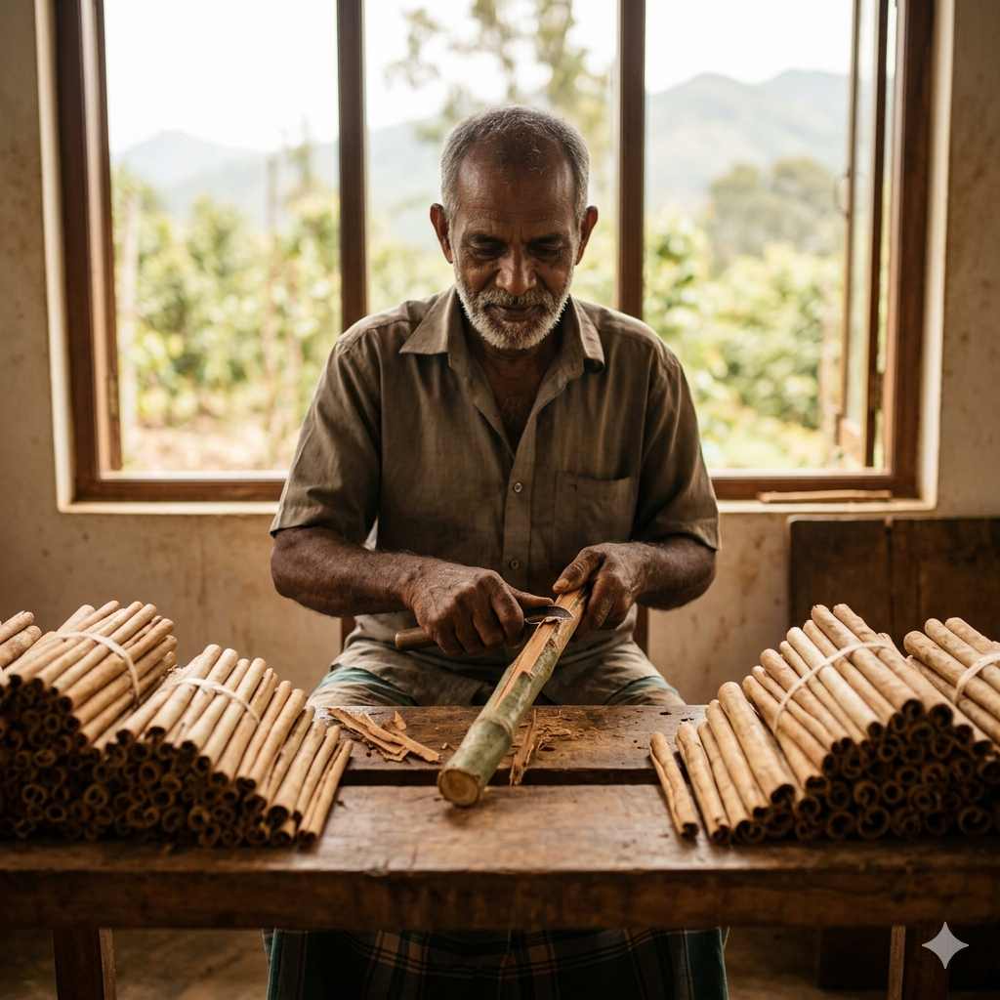
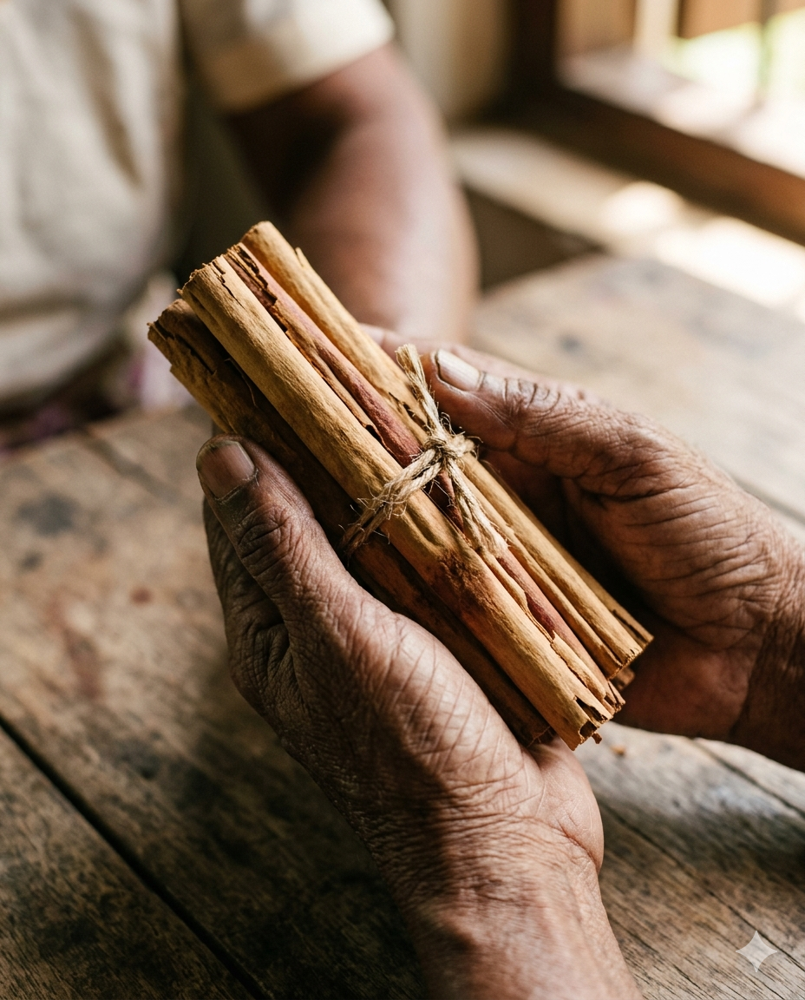
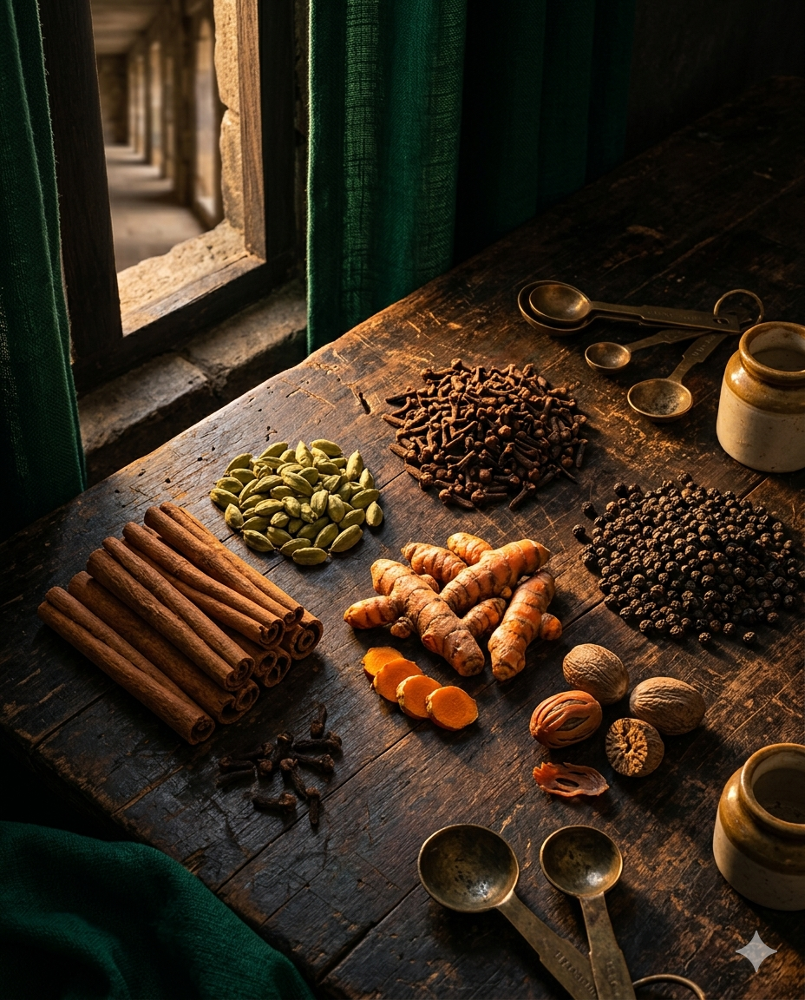
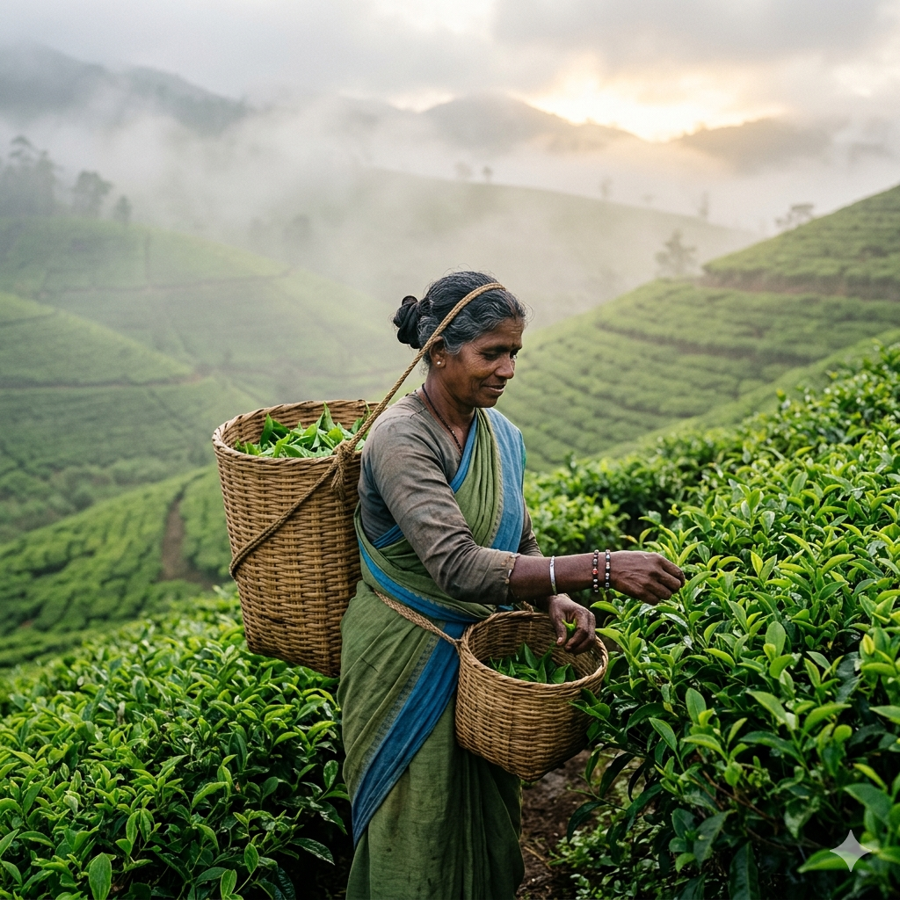
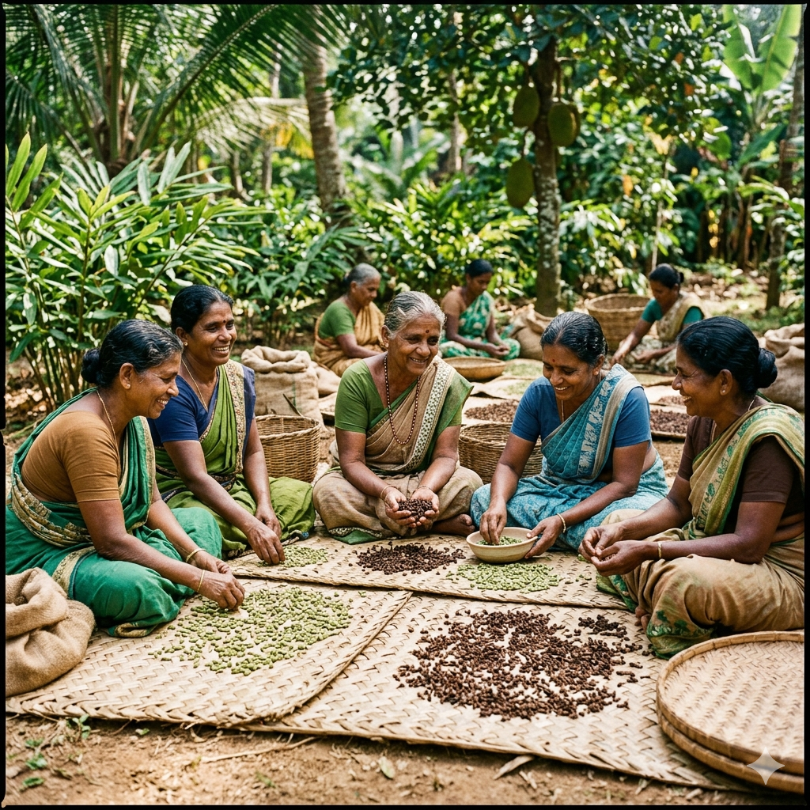
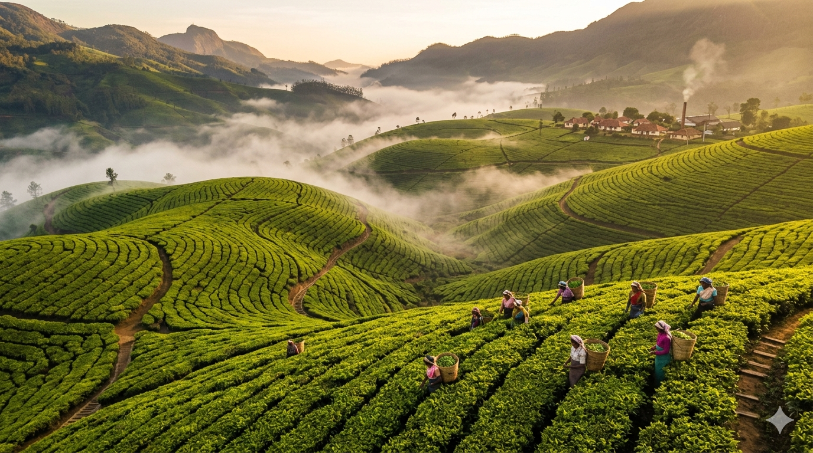

Matale District
The Wijeratne Family
Cinnamon growers since 1898. Master peelers — they can roll a bark quill thinner than a sheet of paper.
Cinnamon
Three generations of Sri Lankan farmers. One small island. The world's most fragrant spice gardens.
Ceylon Crown began the way many things in Sri Lanka do — under the canopy of a cinnamon tree, with a grandfather teaching a grandson how to peel bark by feel.
Our founders grew up on the spice farms of Matale, where their family has tended cinnamon, cloves, and pepper for over four generations. For decades, the world's best Ceylon spices left the island in unmarked bulk sacks, blended overseas under other names, the farmers and their craft made invisible.
We started Ceylon Crown to change that — to bring those spices and teas to your kitchen with their story intact, with the farmer named, the village recorded, the harvest dated, and the price kept fair all the way back to the soil.
Shop Our Harvest
For over two thousand years, this island has been the world's spice cabinet. Roman emperors, Arab traders, Portuguese galleons, Dutch merchants, British tea barons — they all sailed for Ceylon. The reason is unchanged: a unique confluence of volcanic soils, monsoon-fed humidity, and a year-round growing climate that no other spice region can replicate.
Ceylon Cinnamon (Cinnamomum verum) is the world's only "true" cinnamon. Sweeter, lower in coumarin, and protected by EU Geographical Indication — it grows nowhere else.
Ceylon Tea, born in the misty highlands of Nuwara Eliya, gave the world the very phrase "a good cuppa" — the bright, brisk character every breakfast tea has tried to imitate.

We work with 42 small farms, each family-owned, each personally known to our team. They are not "suppliers" — they are partners and shareholders in our story.

Matale District
Cinnamon growers since 1898. Master peelers — they can roll a bark quill thinner than a sheet of paper.
Cinnamon

Nuwara Eliya Highlands
Single-estate tea pluckers at 6,200 ft. Hand-pick only the top two leaves and a bud, before mist lifts.
Tea

Kandy District
A women-led co-op of 18 cardamom and clove farms. Polyculture-grown, sun-dried on woven mats.
Spices
Five non-negotiables that define every Ceylon Crown harvest.
Every batch is traceable to one farm, one harvest week. We never blend across regions to "stretch" supply.
Sun-cured on woven palm mats, never machine-tumbled. Each lot is hand-graded for color, oil content, and aroma.
Every harvest is lab-tested for purity, essential oil percentage, and absence of pesticide residue before shipping.
We pay a guaranteed 35% over standard market rates, locked annually. Our farmers know what next year pays — before they plant.
Tins, cardboard, and recyclable kraft pouches. No plastic, no metallized films. Refillable wherever possible.
The Pearl of the Indian Ocean. Our partner farms are concentrated across three districts — each with a microclimate ideal for a different harvest.

Matale · Kandy · Nuwara Eliya